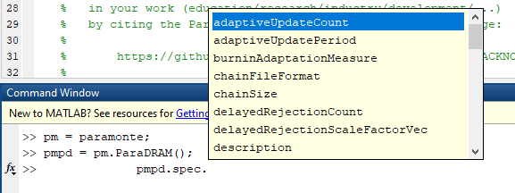
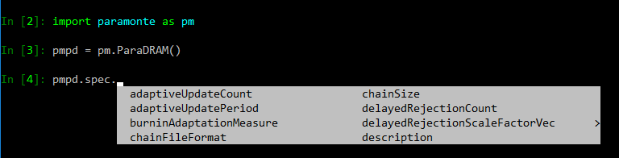

- The quickest way to learn how to call the ParaMonte routines is to look at an example simulation code available in the latest prebuilt release of the ParaMonte library on GitHub.
- The simulation specifications are all automatically set to the appropriate default values, if not provided by the user.
One API for usage from all programming languages
Special care has been made to ensure that we develop highly-similar (if not the same) Application Programming Interface (API) for the ParaMonte library routines across all supported programming languages. In particular, every simulation performed via the ParaDRAM routine requires only two mandatory pieces of information to be supplied by the user.
The generic minimal form of the call to initiate a ParaDRAM simulation from within C, C++, Fortran, MATLAB, or Python has the following universal signature:
ParaDRAM_SAMPLER( ndim : the number of dimensions of the domain of the objective function.
, getLogFunc : returns the natural log of the objective function to be sampled.
, inputFile : (optional) the path to the input file containing the ParaMonte simulation's specifications.
)
where the routine name (that goes in place of PARADRAM_SAMPLER) can be,
- the
runSampler()method of an object of classParaDRAM()in Python, MATLAB, and Fortran programming languages, or, - the global
runParaDRAM()name when called from C/C++/Fortran programming languages.
The first two arguments ndim and getLogFunc() are mandatory while inputFile is optional. This is true across all programming languages (except in the C/C++ interfaces to the ParaMonte routines, where an empty string "" can be used to signal no inputFile presence).
Calling the ParaDRAM sampler
Calling the ParaDRAM sampler from C
The simulation specifications are all automatically set to the appropriate default values. However, to assign non-default values to the simulation specifications from the C languages, the user must provide all simulation specifications as an external input file in the format described on this page. The benefits of using an external file to specify the properties of a ParaMonte simulation are also detailed here.
For a complete descriptive example ParaDRAM usage from within C see this sampling example. You can also download the full source codes for this example form the GitHub release page of the ParaMonte library.
Calling the ParaDRAM sampler from C++
The simulation specifications are all automatically set to the appropriate default values. However, to assign non-default values to the simulation specifications from the C++ languages, the user must provide all simulation specifications as an external input file in the format described on this page. The benefits of using an external file to specify the properties of a ParaMonte simulation are also detailed here.
For a complete descriptive example ParaDRAM usage from within C++ see this sampling example. You can also download the full source codes for this example form the GitHub release page of the ParaMonte library.
Calling the ParaDRAM sampler from Fortran
The simulation specifications are all automatically set to the appropriate default values. However, if needed, there are two ways to assign non-default values to the simulation specifications from the Fortran language:
- passing the specifications as optional arguments to the ParaMonte sampler routine of choice (For example, here is the set of input optional arguments to the
runSampler()method of theParaDRAMsampler class in the ParaMonte library), or, - providing all simulation specifications in an external input file in the format described on this page.
Tip: When using the ParaMonte Fortran library, we recommend that you always specify the simulation specifications via an external input file. The reasons are detailed here.
For a complete descriptive example ParaDRAM usage from within Fortran see this sampling example. You can also download the full source codes for this example form the GitHub release page of the ParaMonte library.
Calling the ParaDRAM sampler from MATLAB
The simulation specifications are all automatically set to the appropriate default values. However, if needed, there are two ways to assign non-default values to the simulation specifications from the MATLAB language (somewhat similar to the Fortran interface to the ParaMonte library):
- One good way is to assign all simulation specifications as attributes of the ParaMonte sampler object that you have constructed. For example, here is a very simple ParaDRAM simulation in MATLAB,
addpath(genpath(./),"-begin"); % path to the paramonte library getLogFunc = @(x) -x.^2; % define a simple log multivariate Normal (MVN) target density pm = paramonte(); % generate a paramonte class instance pmpd = pm.ParaDRAM(); % generate a ParaDRAM sampler instance pmpd.spec.outputFileName = "./out/mvn"; % set the file prefix for the output files of ParaDRAM pmpd.runSampler ( 3 ... sample a 3-dimensional MVN , getLogFunc ... the anonymous function returning the log of MVN );The following screenshot shows a partial list of the ParaDRAM simulation attributes within the
specattribute of the constructedParaDRAMobject in MATLAB (to see the full set of ParaDRAM simulation specifications and their descriptions see this page,
 - Another way is to provide all simulation specifications in an external input file with the format described on this page.
Tip: Unlike C/C++/Fortran, we do NOT recommend specifying the simulation properties via an external input file since hardcoding the simulation specifications in the MATLAB script does not cause long and severe compilation headaches that one gets in compiled languages.
Calling the ParaDRAM sampler from Python
The simulation specifications are all automatically set to the appropriate default values. However, if needed, there are two ways to assign non-default values to the simulation specifications from the Python language (similar to the ParaMonte MATLAB library):
- assigning all simulation specifications as attributes of the ParaMonte sampler object that you have constructed (the recommended method). Here is a very simple ParaDRAM simulation in Python,
import paramonte as pm getLogFunc = lambda x : -x**2 # define a simple log multivariate Normal (MVN) target density pmpd = pm.ParaDRAM() # generate a ParaDRAM sampler instance pmpd.spec.outputFileName = "./out/mvn" # set the file prefix for the output files of ParaDRAM pmpd.runSampler ( ndim = 3 # sample a 3-dimensional MVN , getLogFunc = getLogFunc # the anonymous function returning the log of MVN )The following screenshot shows a partial list of the ParaDRAM simulation attributes within the
specattribute of the constructedParaDRAMobject in Python (to see the full set of ParaDRAM simulation specifications and their descriptions see this page,
 - providing all simulation specifications in an external input file with the format described on this page.
Tip: Unlike C/C++/Fortran, we do NOT recommend specifying the simulation properties via an external input file since hardcoding the simulation specifications in the Python script does not cause long and severe compilation headaches as in compiled languages.